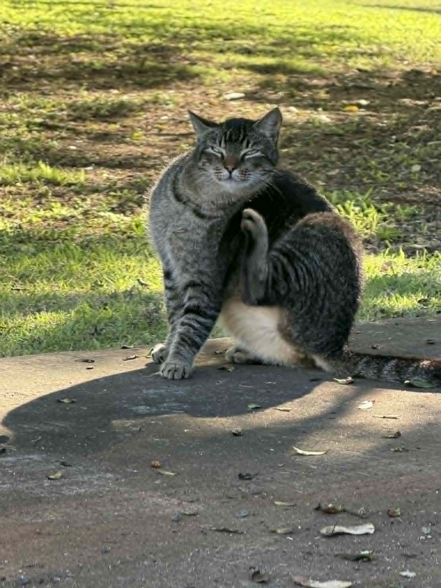

About the Cats Club
The Cats Club is an awesome group for people who enjoy and love cats and love to learn more about them. The club focuses on kindness, responsible pet care, and appreciation for animals. A place for cat lovers where they can share about their cats, share knowledge and enjoy cat themed activity.

Mission
Our mission is to encourage people to treat house cats, stray cats, and other animals with respect and care. We want our members to understand basic cat needs such as food, water, safety, grooming, and companionship. Members will learn how to be responsible and compassionate toward cats and other animals.
Responsible Pet Care
Responsible pet care means giving animals the basic things they need, such as food, clean water, shelter, safety, and attention. Learning these responsibilities helps members become more caring and respectful toward cats and other animals. Source: AVMA Responsible Pet Ownership
Who can join?
Everyone is welcome to join the club whether you are a cat owner, an animal lover, or someone who just wanted to socialize, this club is a great place for everyone.